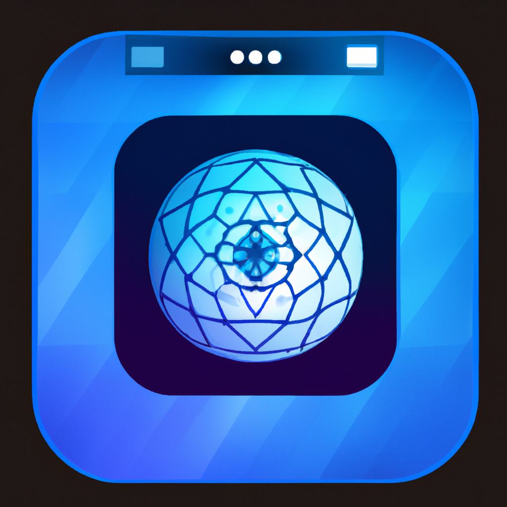

<mat-toolbar  style="background-color: #27272d;">
    
    <span style="margin-left: 10px;" class="custom-text">ImageVerse</span>
    <div style="margin-left: 80px;">
        <button mat-raised-button style="background-color: #FFCF77;" (click)="openGithubLink('https://github.com/haseeb-xd/image-verse')">View Github</button>
    </div>
</mat-toolbar>